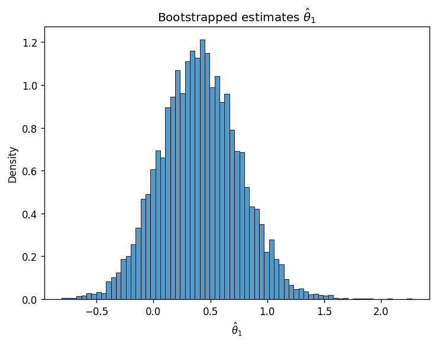
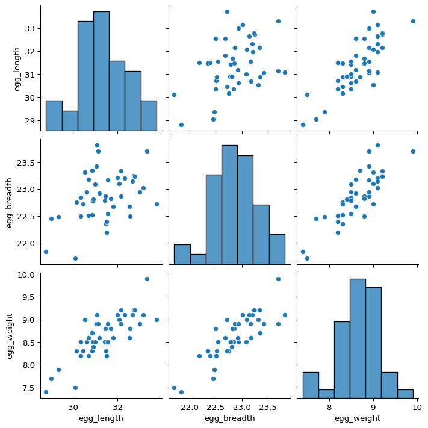

import pandas as pd
eggs = pd.read_csv("data/snowy_plover.csv")
eggs.head(5)| egg_weight | egg_length | egg_breadth | bird_weight | |
|---|---|---|---|---|
| 0 | 7.4 | 28.80 | 21.84 | 5.2 |
| 1 | 7.7 | 29.04 | 22.45 | 5.4 |
| 2 | 7.9 | 29.36 | 22.48 | 5.6 |
| 3 | 7.5 | 30.10 | 21.71 | 5.3 |
| 4 | 8.3 | 30.17 | 22.75 | 5.9 |
Last time, we introduced the idea of random variables: numerical functions of a sample. Most of our work in the last lecture was done to build a background in probability and statistics. Now that we’ve established some key ideas, we’re in a good place to apply what we’ve learned to our original goal – understanding how the randomness of a sample impacts the model design process.
In this lecture, we will delve more deeply into this idea of fitting a model to a sample. We’ll explore how to re-express our modeling process in terms of random variables and use this new understanding to steer model complexity.
In the last lecture, we talked at length about the concept of a distribution – a statement of all possible values that a random variable can take, as well as the probability of the variable taking on each value. Let’s take a moment to refine this definition.
In data science, we seldom have access to the entire population we wish to investigate. If we want to understand the distribution of a random variable across the population, we often need to use the distribution of collected samples to infer the properties of the population. For example, say we wish to understand the distribution of heights of people across the US population. We can’t directly survey every single person in the country, so we might instead take smaller samples of heights and use these samples to estimate the population’s distribution.
A common situation is wishing to know the mean of a population (eg the average height of all people in the US). In this case, we can take several samples of size \(n\) from the population, and compute the mean of each sample.
In Data 8, you encountered the Central Limit Theorem (CLT). This is a powerful theorem for estimating the distribution of a population with mean \(\mu\) and standard deviation \(\sigma\) from a collection of smaller samples. The CLT tells us that if an IID sample of size \(n\) is large, then the probability distribution of the sample mean is roughly normal with mean \(\mu\) and SD \(\sigma/\sqrt{n}\). In simpler terms, this means:

Importantly, the CLT assumes that each observation in our samples is drawn IID from the distribution of the population. In addition, the CLT is accurate only when \(n\) is “large.” What counts as a “large” sample size depends on the specific distribution. If a population is highly symmetric and unimodal, we could need as few as \(n=20\); if a population is very skewed, we need a larger \(n\). Classes like Data 140 investigate this idea in great detail.
Why is this helpful? Consider what might happen if we estimated the population distribution from just one sample. If we happened, by random chance, to draw a sample with a different mean or spread than that of the population, we might get a skewed view of how the population behaves (consider the extreme case where we happen to sample the exact same value \(n\) times!). By drawing many samples, we can consider how the sample distribution varies across multiple subsets of the data. This allows us to approximate the properties of the population without the need to survey every single member.
At this point in the course, we’ve spent a great deal of time working with models. When we first introduced the idea of modeling a few weeks ago, we did so in the context of prediction: using models to make predictions about unseen data.
Another reason we might build models is to better understand complex phenomena in the world around us. Inference is the task of using a model to infer the true underlying relationships between the feature and response variables. If we are working with a set of housing data, prediction might ask: given the attributes of a house, how much is it worth? Inference might ask: how much does having a local park impact the value of a house?
A major goal of inference is to draw conclusions about the full population of data, given only a random sample. To do this, we aim to estimate the value of a parameter, which is a numerical function of the population (for example, the population mean \(\mu\)). We use a collected sample to construct a statistic, which is a numerical function of the random sample (for example, the sample mean \(\bar{X}_n\)). It’s helpful to think “p” for “parameter” and “population,” and “s” for “sample” and “statistic.”
Since the sample represents a random subset of the population, any statistic we generate will likely deviate from the true population parameter. We say that the sample statistic is an estimator of the true population parameter. Notationally, the population parameter is typically called \(\theta\), while its estimator is denoted by \(\hat{\theta}\).
To address our inference question, we aim to construct estimators that closely estimate the value of the population parameter. We evaluate how “good” an estimator is by answering three questions:
The bias of an estimator is how far off it is from the parameter, on average.
\[\text{Bias}(\hat{\theta}) = \mathbb{E}[\hat{\theta} - \theta] = \mathbb{E}[\hat{\theta}] - \theta\]
For example, the bias of the sample mean as an estimator of the population mean is:
\[\begin{align}\mathbb{E}[\bar{X}_n - \mu] &= \mathbb{E}[\frac{1}{n}\sum_{i=1}^n (X_i)] - \mu \\ &= \frac{1}{n}\sum_{i=1}^n \mathbb{E}[X_i] - \mu \\ &= \frac{1}{n} (n\mu) - \mu \\ &= 0\end{align}\]
Because its bias is equal to 0, the sample mean is said to be an unbiased estimator of the population mean.
The variance of an estimator is a measure of how much the estimator tends to vary from its mean value.
\[\text{Var}(\hat{\theta}) = \mathbb{E}\left[(\hat{\theta} - \mathbb{E}[\hat{\theta}])^2 \right]\]
The mean squared error measures the “goodness” of an estimator by incorporating both the bias and variance. Formally, it is defined:
\[\text{MSE}(\hat{\theta}) = \mathbb{E}\left[(\hat{\theta} - \theta)^2 \right]\]
If we denote the bias as \(b = \mathbb{E}[\hat{\theta}] - \theta\), the MSE can be re-expressed to show its relationship to bias and variance.
\[\begin{align} \text{MSE}(\hat{\theta}) &= \mathbb{E}\left[(\hat{\theta} - \mathbb{E}[\hat{\theta}] + b)^2 \right] \\ &= \mathbb{E}\left[(\hat{\theta} - \mathbb{E}[\hat{\theta}])^2\right] + b^2 + 2b\mathbb{E}\left[\hat{\theta} - \mathbb{E}[\hat{\theta}]\right] \\ &= \mathbb{E}\left[(\hat{\theta} - \mathbb{E}[\hat{\theta}])^2\right] + b^2 + 2b\mathbb{E}[\hat{\theta}] - 2b\mathbb{E}[\hat{\theta}] \\ &= \text{Var}(\hat{\theta}) + b^2 \end{align}\]
Now that we’ve established the idea of an estimator, let’s see how we can apply this learning to the modeling process. To do so, we’ll take a moment to formalize our data collection and models in the language of random variables.
Say we are working with an input variable, \(x\), and a response variable, \(Y\). We assume that \(Y\) and \(x\) are linked by some relationship \(g\) – in other words, \(Y = g(x)\). \(g\) represents some “universal truth” or “law of nature” that defines the underlying relationship between \(x\) and \(Y\).
As data scientists, we have no way of directly “seeing” the underlying relationship \(g\). The best we can do is collect observed data out in the real world to try to understand this relationship. Unfortunately, the data collection process will always have some inherent error (think of the randomness you might encounter when taking measurements in a scientific experiment). We say that each observation comes with some random error or noise term, \(\epsilon\). This error is assumed to have expectation 0, variance \(\sigma^2\), and be IID across each observation. The existence of this random noise means that our observations, \(Y(x)\), are random variables.
\[\text{True relationship: }Y = g(x)\]
\[\text{Observed relationship: }Y = g(x) + \epsilon\]

We can only observe our random sample of data, represented by the blue points above. From this sample, we want to estimate the true relationship \(g\). We do this by constructing the model \(\hat{Y}(x)\) to estimate \(g\).

If we assume that the true relationship \(g\) is linear, we can re-express this goal in a slightly different way. The observed data is generated by the relationship:
\[Y(x) = g(x) + \epsilon = \theta_0 + \theta_1 x_1 + \ldots + \theta_p x_p + \epsilon\]
We aim to train a model to obtain estimates for each \(\theta_i\), which we refer to as \(\hat{\theta}_i\). Because \(\hat{Y}\) is a fit to random data, we say that it is also a random variable.
\[\hat{Y}(x) = \hat{\theta}_0 + \hat{\theta}_1 x_1 + \ldots + \hat{\theta}_p x_p\]
With this random variables framework in hand, we’re now ready to understand how model complexity can finetune our model’s performance.
To evaluate our model’s performance, we’ve previously considered the MSE of our model across a single sample of observed data. Now that we’ve reframed our model \(\hat{Y}\) and observations \(Y\) as random variables, we’ll use a theoretical approach to better understand the model’s error. Model risk is defined as the mean square prediction error of the random variable \(\hat{Y}\). It is an expectation across all samples we could have possibly gotten when fitting the model. Model risk considers the model’s performance on any sample that is theoretically possible, rather than the specific data that we have collected.
\[\text{Model risk }=\mathbb{E}\left[(Y-\hat{Y})^2\right]\]
What is the origin of the error encoded by model risk? Recall the data generation process we established earlier. There is the true underlying relationship \(g\), observed data (with random noise) \(Y\), and model \(\hat{Y}\).

To better understand model risk, we’ll zoom in on a single data point in the plot above.

Remember that \(\hat{Y}(x)\) is a random variable – it is the prediction made for \(x\) after being fit on the specific sample used for training. If we had used a different sample for training, a different prediction might have been made for this value of \(x\). To capture this, the diagram above considers both the prediction \(\hat{Y}(x)\) made for a particular random training sample, and the expected prediction across all possible training samples, \(\mathbb{E}[\hat{Y}(x)]\).
We can use this simplified diagram to break down the model risk into smaller components. First, start by considering the error on a single prediction, \(Y(x)-\hat{Y}(x)\).

We can identify three components to this error.

That is, the error can be written as:
\[Y(x)-\hat{Y}(x) = \epsilon + \left(g(x)-\mathbb{E}\left[\hat{Y}(x)\right]\right) + \left(\mathbb{E}\left[\hat{Y}(x)\right] - \hat{Y}(x)\right)\] \[\newline \] The model risk is the expected square of the expression above, \(\mathbb{E}\left[(Y(x)-\hat{Y}(x))^2\right]\). If we work through the algebra, we find the following relationship:
\[\mathbb{E}\left[(Y(x)-\hat{Y}(x))^2\right]=\sigma^2 + \left(\mathbb{E}\left[\hat{Y}(x)\right]-g(x)\right)^2 + \text{Var}(\hat{Y}(x))\]
This expression may look complicated at first blush, but we’ve actually already defined each term earlier this lecture! Let’s break things down.
This means that we can simplify the statement above.
\[\text{Model risk = observation variance + (model bias)}^2 \text{+ model variance}\]
This is known as the bias-variance tradeoff. What does it mean? Remember that the model risk is a measure of the model’s performance. Our goal in building models is to keep model risk low; this means that we will want to ensure that each component of model risk is kept at a low value.
Observation variance is an inherent, random part of the data collection process. We aren’t able to reduce the observation variance, so we’ll focus our attention to the model bias and model variance.
In the Feature Engineering lecture, we considered the issue of overfitting. We saw that the model’s error or bias tends to decrease as model complexity increases – if we design a highly complex model, it will tend to make predictions that are closer to the true relationship \(g\). At the same time, model variance tends to increase as model complexity increases: a complex model may overfit to the training data, meaning that small differences in the random samples used for training lead to large differences in the fitted model. We have a problem. To reduce model risk, we could decrease model bias by increasing the model’s complexity, which would lead to an increase in model variance. Alternatively, we could decrease model variance by decreasing the model’s complexity – at the cost of increased bias.

We need to strike a balance. Our goal in model creation is to use a complexity level that is high enough to keep bias low, but not so high that model variance is large. We’ll explore how to do this using regularization in the next lecture.
We’ve spent a great deal of time now using random variables to explore model performance. It turns out that our work in probability can help us understand another aspect of model design – interpreting what exactly our fitted models can tell us about the world around us.
Recall the framework we established earlier this lecture. If we assume that the underlying relationship between our observations and input features is linear, we can express this relationship in terms of the unknown, true model parameters \(\theta\).
\[Y(x) = g(x) + \epsilon = \theta_0 + \theta_1 x_1 + \ldots + \theta_p x_p + \epsilon\]
Our model attempts to estimate each true parameter \(\theta_i\) using the estimates \(\hat{\theta}_i\).
\[\hat{Y}(x) = \hat{\theta}_0 + \hat{\theta}_1 x_1 + \ldots + \hat{\theta}_p x_p\]
Let’s pause for a moment. At this point, we’re very used to working with the idea of a model parameter. But what exactly does each coefficient \(\theta_i\) actually mean? We can think of each \(\theta_i\) as a slope of the linear model – if all other variables are held constant, a unit change in \(x_i\) will result in a \(\theta_i\) change in \(Y(x)\). Broadly speaking, a large value of \(\theta_i\) means that the feature \(x_i\) has a large effect on the response; conversely, a small value of \(\theta_i\) means that \(x_i\) has little effect on the response. In the extreme case, if the true parameter \(\theta_i\) is 0, then the feature \(x_i\) has no effect on \(Y(x)\).
If the true parameter \(\theta_i\) for a particular feature is 0, this tells us something pretty significant about the world – there is no underlying relationship between \(x_i\) and \(Y(x)\)! How then, can we test if a parameter is 0? As a baseline, we go through our usual process of drawing a sample, using this data to fit a model, and computing an estimate \(\hat{\theta}_i\). However, we need to also consider the fact that if our random sample had come out differently, we may have found a different result for \(\hat{\theta}_i\). To infer if the true parameter \(\theta_i\) is 0, we want to draw our conclusion from the distribution of \(\hat{\theta}_i\) estimates we could have drawn across all other random samples.
To do this, we’ll use an inference technique called hypothesis testing. This concept was introduced back in Data 8. You may find it helpful to review the hypothesis testing method to refresh your memory.
We’ll work with the snowy plover dataset throughout this section.
import pandas as pd
eggs = pd.read_csv("data/snowy_plover.csv")
eggs.head(5)| egg_weight | egg_length | egg_breadth | bird_weight | |
|---|---|---|---|---|
| 0 | 7.4 | 28.80 | 21.84 | 5.2 |
| 1 | 7.7 | 29.04 | 22.45 | 5.4 |
| 2 | 7.9 | 29.36 | 22.48 | 5.6 |
| 3 | 7.5 | 30.10 | 21.71 | 5.3 |
| 4 | 8.3 | 30.17 | 22.75 | 5.9 |
Our goal will be to predict the weight of a newborn plover chick, which we assume follows the true relationship below.
\[\text{bird\_weight} = \theta_0 + \theta_1 \text{egg\_weight} + \theta_2 \text{egg\_length} + \theta_3 \text{egg\_breadth} + \epsilon\]
Say we wish to determine if the egg_weight impacts the bird_weight of a chick – we want to infer if \(\theta_1\) is equal to 0.
First, we define our hypotheses:
Next, we use our data to fit a model that approximates the relationship above. This gives us the observed value of \(\hat{\theta}_1\) found from our data.
from sklearn.linear_model import LinearRegression
X = eggs[["egg_weight", "egg_length", "egg_breadth"]]
Y = eggs["bird_weight"]
model = LinearRegression()
model.fit(X, Y)
# This gives an array containing the fitted model parameter estimates
thetas = model.coef_
# Put the parameter estimates in a nice table for viewing
pd.DataFrame({"theta_hat":[model.intercept_, thetas[0], thetas[1], thetas[2]]}, index=["theta_0", "theta_1", "theta_2", "theta_3"])| theta_hat | |
|---|---|
| theta_0 | -4.605670 |
| theta_1 | 0.431229 |
| theta_2 | 0.066570 |
| theta_3 | 0.215914 |
We now have the value of \(\hat{\theta}_1\) when considering the single sample of data that we have. To get a sense of how this estimate might vary if we were to draw different random samples, we will use bootstrapping. To construct a bootstrap sample, we will draw a resample from the collected data that:
We draw a bootstrap sample, use this sample to fit a model, and record the result for \(\hat{\theta}_1\) on this bootstrapped sample. We then repeat this process many times to generate a bootstrapped distribution of \(\hat{\theta}_1\). This gives us an estimate of what the true distribution of \(\hat{\theta}_1\) across all possible samples might look like.
# Set a random seed so you generate the same random sample as staff
# In the "real world", we wouldn't do this
import numpy as np
np.random.seed(1337)
# Set the sample size of each bootstrap sample
n = len(eggs)
# Create a list to store all the bootstrapped estimates
estimates = []
# Generate a bootstrap resample from `eggs` and find an estimate for theta_1 using this sample.
# Repeat 10000 times.
for i in range(10000):
bootstrap_resample = eggs.sample(n, replace=True)
X_bootstrap = bootstrap_resample[["egg_weight", "egg_length", "egg_breadth"]]
Y_bootstrap = bootstrap_resample["bird_weight"]
bootstrap_model = LinearRegression()
bootstrap_model.fit(X_bootstrap, Y_bootstrap)
bootstrap_thetas = bootstrap_model.coef_
estimates.append(bootstrap_thetas[0])import matplotlib.pyplot as plt
import seaborn as sns
plt.figure(dpi=120)
sns.histplot(estimates, stat="density")
plt.xlabel(r"$\hat{\theta}_1$")
plt.title(r"Bootstrapped estimates $\hat{\theta}_1$");
Now, we have a sense of how \(\hat{\theta}_1\) might vary across different random samples. How does this help us understand if the true parameter \(\theta_1\) is 0 or not? We’ll use an approximate confidence interval. Recall from Data 8 that a x% confidence interval is a range of values where we are x% confident that the interval contains the true parameter. In other words, if we repeated the bootstrapping process above many times, we’d expect the x% confidence interval to contain the true value of \(\theta_1\) about x% of the time.
For our purposes, we’ll consider the approximate 95% confidence interval. Because of the duality of confidence intervals and hypothesis tests, we reject the null hypothesis at a cutoff level of 5% if 0 is not contained in the 95% confidence interval for \(\hat{\theta}_1\).
To create a 95% confidence interval, we compute the 2.5th and 97.5th percentiles of our bootstrapped estimates of \(\theta_1\).
lower = np.percentile(estimates, 2.5)
upper = np.percentile(estimates, 97.5)
conf_interval = (lower, upper)
conf_interval(-0.258648119568487, 1.1034243854204047)We find that our bootstrapped approximate 95% confidence interval for \(\theta_1\) is \([-0.259, 1.103]\). Immediately, we can see that 0 is contained in this interval – this means that we cannot conclude that \(\theta_1\) is non-zero! More formally, we cannot reject the null hypothesis (that \(\theta_1\) is 0) under a 5% cutoff.
We can repeat this process to construct 95% confidence intervals for the other parameters of the model.
np.random.seed(1337)
theta_0_estimates = []
theta_1_estimates = []
theta_2_estimates = []
theta_3_estimates = []
for i in range(10000):
bootstrap_resample = eggs.sample(n, replace=True)
X_bootstrap = bootstrap_resample[["egg_weight", "egg_length", "egg_breadth"]]
Y_bootstrap = bootstrap_resample["bird_weight"]
bootstrap_model = LinearRegression()
bootstrap_model.fit(X_bootstrap, Y_bootstrap)
bootstrap_theta_0 = bootstrap_model.intercept_
bootstrap_theta_1, bootstrap_theta_2, bootstrap_theta_3 = bootstrap_model.coef_
theta_0_estimates.append(bootstrap_theta_0)
theta_1_estimates.append(bootstrap_theta_1)
theta_2_estimates.append(bootstrap_theta_2)
theta_3_estimates.append(bootstrap_theta_3)
theta_0_lower, theta_0_upper = np.percentile(theta_0_estimates, 2.5), np.percentile(theta_0_estimates, 97.5)
theta_1_lower, theta_1_upper = np.percentile(theta_1_estimates, 2.5), np.percentile(theta_1_estimates, 97.5)
theta_2_lower, theta_2_upper = np.percentile(theta_2_estimates, 2.5), np.percentile(theta_2_estimates, 97.5)
theta_3_lower, theta_3_upper = np.percentile(theta_3_estimates, 2.5), np.percentile(theta_3_estimates, 97.5)
# Make a nice table to view results
pd.DataFrame({"lower":[theta_0_lower, theta_1_lower, theta_2_lower, theta_3_lower], "upper":[theta_0_upper, \
theta_1_upper, theta_2_upper, theta_3_upper]}, index=["theta_0", "theta_1", "theta_2", "theta_3"])| lower | upper | |
|---|---|---|
| theta_0 | -15.278542 | 5.161473 |
| theta_1 | -0.258648 | 1.103424 |
| theta_2 | -0.099138 | 0.208557 |
| theta_3 | -0.257141 | 0.758155 |
Something’s off here. Notice that 0 is included in the 95% confidence interval for every parameter of the model. Using the interpretation we outlined above, this would suggest that we can’t say for certain that any of the input variables impact the response variable! This makes it seem like our model can’t make any predictions – and yet, each model we fit in our bootstrap experiment above could very much make predictions of \(Y\).
How can we explain this result? Think back to how we first interpreted the parameters of a linear model. We treated each \(\theta_i\) as a slope, where a unit increase in \(x_i\) leads to a \(\theta_i\) increase in \(Y\), if all other variables are held constant. It turns out that this last assumption is very important. If variables in our model are somehow related to one another, then it might not be possible to have a change in one of them while holding the others constant. This means that our interpretation framework is no longer valid! In the models we fit above, we incorporated egg_length, egg_breadth, and egg_weight as input variables. These variables are very likely related to one another – an egg with large egg_length and egg_breadth will likely be heavy in egg_weight. This means that the model parameters cannot be meaningfully interpreted as slopes.
To support this conclusion, we can visualize the relationships between our feature variables. Notice the strong positive association between the features.
sns.pairplot(eggs[["egg_length", "egg_breadth", "egg_weight"]]);
This issue is known as colinearity, sometimes also called multicolinearity. Colinearity occurs when one feature can be predicted fairly accurately by a linear combination of the other features, which happens when one feature is highly correlated with the others.
Why is colinearity a problem? Its consequences span several aspects of the modeling process:
The take-home point is that we need to be careful with what features we select for modeling. If two features likely encode similar information, it is often a good idea to choose only one of them as an input variable.